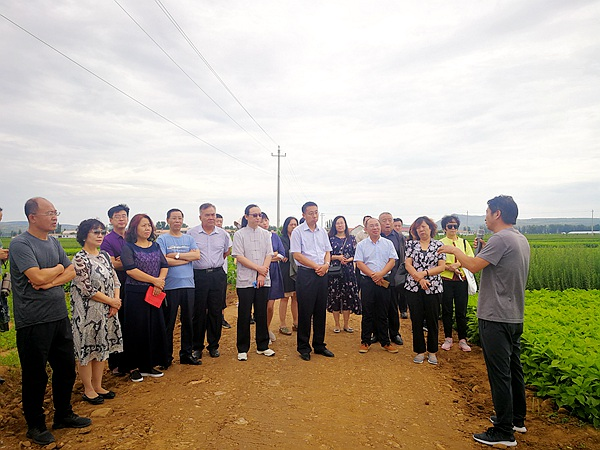

7月16日，农工党河北省委调研组一行来宁城开展养老项目调研活动。农工党赤峰市委副主委隗春华，宁城县委常委、统战部长白景辉陪同调研。

调研组一行首先参观了宁城县三阳养老有限公司建设情况，召开了座谈会，公司负责人介绍了企业运营情况、存在的优势以及发展战略。座谈会上，大家畅所欲言，深入进行了交流探讨。通过阅读资料、讲解交流、实地查看等方式，详细了解三阳养老项目的有关情况，以及养老产业发展前景，并对宁城县老年人养老工作给予充分肯定，表示今后要继续加强交流合作。
近年来，宁城县委、县政府高度重视民生工程，特别是养老问题，积极打造现代养老服务模式，全面提升养老服务质量。宁城县三阳有限公司是内蒙古自治区首个养老服务ppp项目公司，也是与政府合作的唯一一家主营养老产业的现代化企业。公司于2015年成立，注册资金1000万元，占地118亩，全部建成后养老用房面积6.3万平米，提供养老床位1650张。